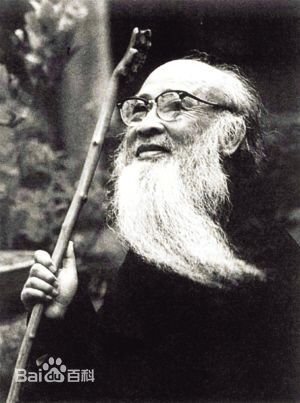
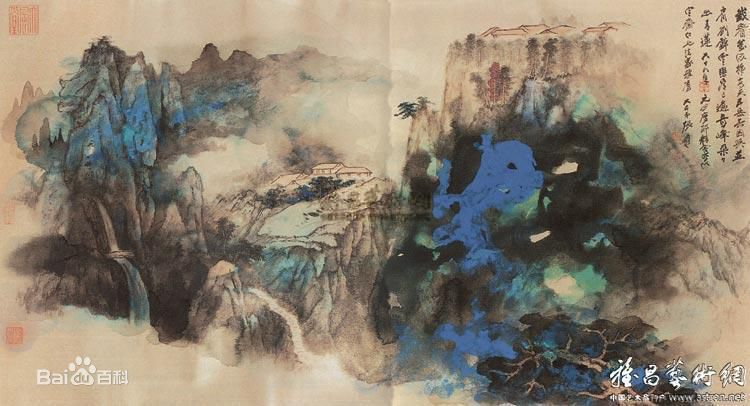

|

张大千（1899年5月10日—1983年4月2日），原名正权，后改名爰，字季爰，号大千，别号大千居士、下里港人，斋名大风堂。四川内江人，祖籍广东省番禺，1899年5月10日出生于四川省内江市中区城郊安良里的一个书香门第的家庭，中国泼墨画家，书法家。 20 世纪50年代，张大千游历世界，获得巨大的国际声誉，被西方艺坛赞为“东方之笔”。他与二哥张善子昆仲创立“大风堂派”，是二十世纪中国画坛最具传奇色彩的泼墨画工。特别在山水画方面卓有成就。后旅居海外，画风工写结合，重彩、水墨融为一体，尤其是泼墨与泼彩，开创了新的艺术风格，因其诗、书、画与齐白石、溥心畲齐名，故又并称为“南张北齐”和“南张北溥”，名号多如牛毛。与黄君璧、溥心畲以“渡海三家”齐名。二十多岁便蓄著一把大胡子，成为张大千日后的特有标志。 他曾与齐白石、徐悲鸿、黄君璧、黄宾虹、溥儒、郎静山等及西班牙抽象派画家毕加索交游切磋。 作品特色张善子、张大千昆仲共同创建了大千画派，它是中国综合性绘画流派之一。二十世纪20年代，张善子、张大千在上海西门路西成里“大风堂”开堂收徒，传道授艺，所有弟子们皆被称为“大风堂门人”。它是一个有别于“长安画派”、“海上画派”、“京津画派”等唯一不墨泼彩等画法，大风堂画派的画风都呈现出百花齐放的景象，是一支生生不息、代代传承的中国画画派。 和许多画家一样，张大千也同样经历了描摹之路。在近代像大千那样广泛吸收古人营养的画家是为数不多的，他师古人、师近人、师万物、师造化，才能达到“师心为的“的境界。他师古而不拟古，在继承传统文化的同时，他还想到了创新，最后在继承传统的基础上发展了泼墨，创造了泼彩、泼彩墨艺术，同时还改进了国画宣纸的质地，然而思想的先行者往往是孤独的，在他五言绝句《荷塘》有“先生归去后，谁坐此船来”之句，似乎暗示着后来者继续他的道路。 张大千除了擅长山水、人物、花卉、翎毛以外，在书法方面比较欠缺，这应是他的遗憾。他早期师从清代晚期的著名书法家李瑞清、曾农髯，形成自己细秀，方平，略带隶书味的书风，二十世纪三十年代以后，张大千先生的书法开始酝酿变化。他转学多师，学习魏碑，《瘗鹤铭》，参以宋代大家黄山谷的笔势，学习石涛笔法刚劲，不拘一格的书风。他的书法艺术在继承传统的基础上，融合了山水画的意境，不是一味地追求表面上的张扬外露和剑拔弩张，而是使力与感情相融合，平中求奇，使他的书法劲拔飘逸，外柔内刚，张大千笔力遒劲而秀逸的自家风格，被后人称为“大千体”。 在20世纪的中国画家中，张大千无疑是其中的佼佼者，画意境清丽雅逸。”他才力、学养过人，于山水、人物、花卉、仕女、翎毛无所不擅，特别是在山水画方面具有特殊的贡献：他和当时许多画家担负起对清初盛行的正统派复兴的责任，也就是继承了唐、宋、元画家的传统，使得自乾隆之后衰弱的正统派得到中兴。“ |